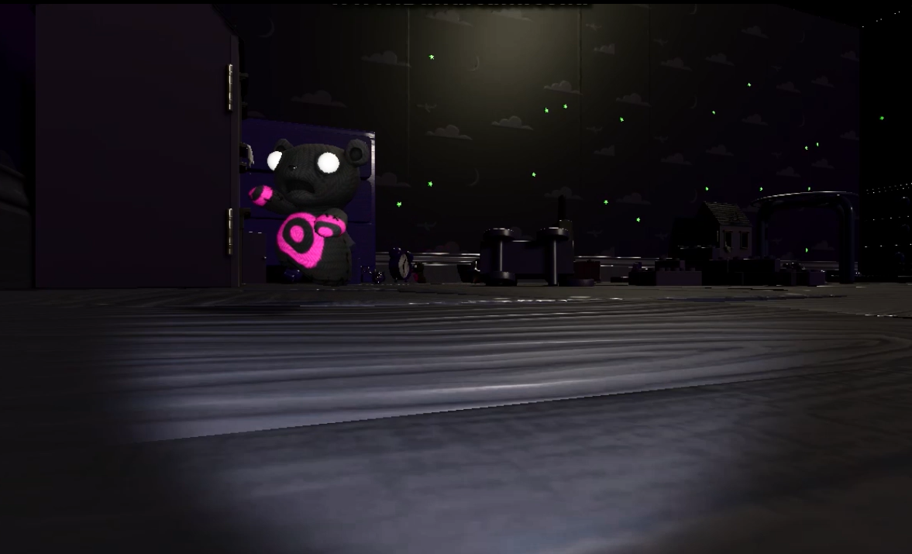
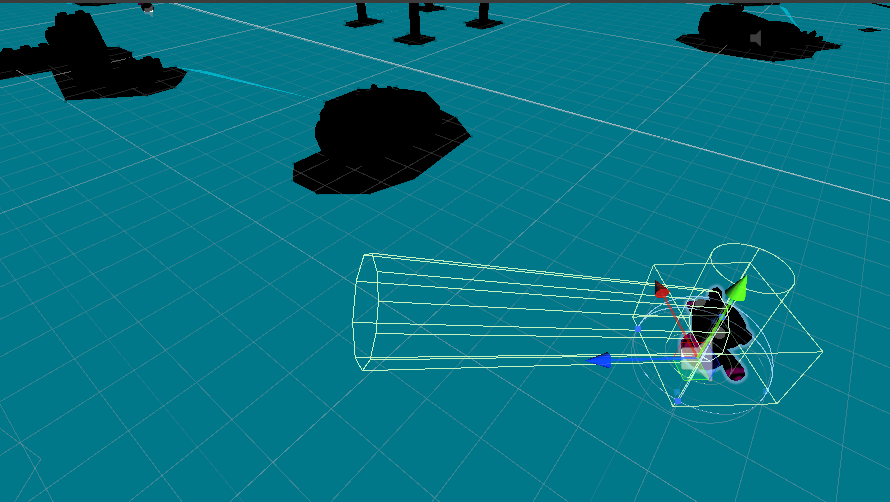
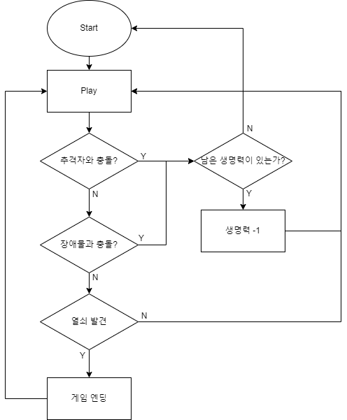

먹잇감을 찾아 돌아다니는 꿈속의 몬스터
1
RayCast 기반 몬스터 트래킹 시스템
개발 의도. 플레이어가 좀 더 긴박감을 느낄 수 있도록, 한번 쫓기기 시작하면 게임오버 상태가 될 때까지 몬스터가 쫓아오도록 개발했습니다.
- 몬스터는 NavMesh와 Raycast를 함께 사용
- 상태(State): idle(대기) → walk(이동) → search(플레이어 탐색) → chase(추적)
- 몬스터의 눈 위치에서 Ray를 발사해 충돌 오브젝트를 확인하고,
"Player"와 충돌 시 상태를 chase로 전환해 추적 시작

게임 속 몬스터

NavMesh 기반 몬스터 트래킹
2
게임 흐름 제어
- 플레이어가 추격자와 충돌하면 남은 생명 오브젝트 수에 따라 Game Over 이동 또는 생명 -1 처리
- 장애물 충돌 시에도 동일한 생명 기반 알고리즘 적용
- 탈출 열쇠 발견 여부에 따라 Game Clear 또는 계속 플레이로 분기
Flow Chart
